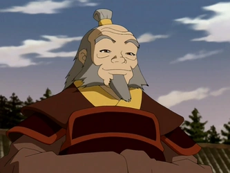

Iroh was a retired Fire Nation general, a former Crown Prince of the nation, a Grand Lotus of the Order of the White Lotus,[1] a firebending master, and a wise mentor to his nephew Zuko.[8] He was the elder son of Fire Lord Azulon and Ilah and the older brother of Ozai.[11] Iroh's well-known ability to breathe fire and his claims of "slaying" the last dragon earned him the honorary title "The Dragon of the West".[12][13] Unlike many other individuals from the Fire Nation, particularly those within his own family, Iroh was a wise, easy-going, and spiritual man. He appreciated and admired the balance of the four elements, and even incorporated aspects of the other elements into his own firebending techniques.[14] Iroh aided Avatar Aang and his companions on several occasions, and was consequently branded as a traitor.[15] An extremely perceptive person, he journeyed to the Spirit World in search of his deceased son Lu Ten.[15][16][17] His knowledge and respect for the four elements allowed him to provide advice to others; he assisted many close associates and friends.[2][12][14][18] After the traumatic death of his son, Iroh saw Zuko as his own son rather than his nephew,[19] and encouraged him to choose his own destiny, rather than a fate members of the royal family expected of him. Upon Zuko's coronation as Fire Lord after Ozai's defeat and the conflict's conclusion, he reopened the Jasmine Dragon tea shop, and served tea for the rest of his retirement.[20] When he deemed his business in the mortal world finished, Iroh became a spirit after leaving his body behind and traversing to the Spirit World, where he continued serving tea to various spirits.[21]